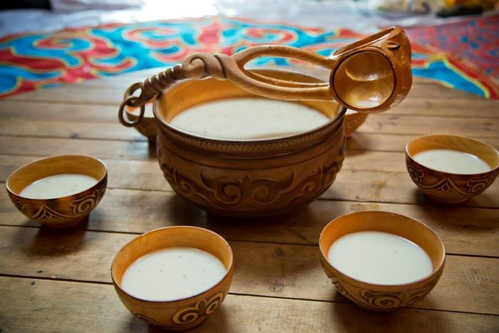
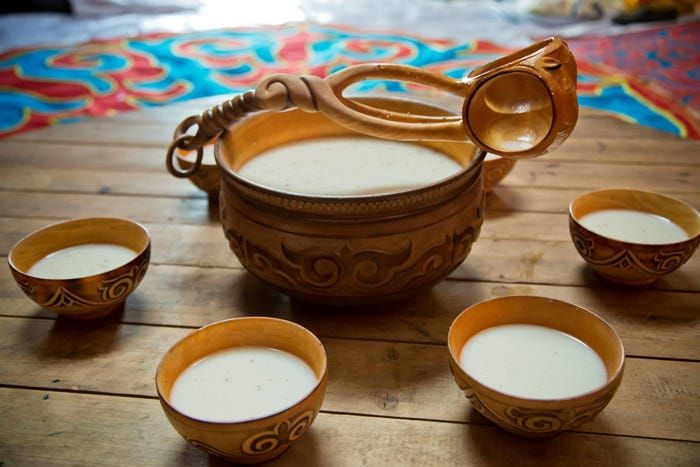

About Kuizine
Our why
We believe food is more than just taste—it’s culture, tradition, and connection. That’s why at Kuizine, we share the authentic flavors of Kazakh cuisine, so every meal becomes a journey into the history and hospitality of the Great Steppe.

Our approach
We’re food lovers, inspired by the nomadic spirit and centuries-old traditions. Our approach is simple—bring people together around the table with dishes that carry the warmth of Kazakh hospitality. At Kuizine, you’ll find recipes and stories crafted with care to celebrate the unique flavors and values of our culture.

Our Kazakh essentials
From hearty beshbarmak and golden baursaks to the rich taste of kazy and refreshing kumys, each dish is made with authenticity and respect for tradition. For us, details matter: fresh ingredients, careful preparation, and the cultural meaning behind every recipe. This is what makes Kuizine not just about food, but about preserving and sharing the timeless heritage of Kazakhstan.

Our team
At Kuizine, you’ll find traditional dishes and flavors crafted with care to make every meal a true taste of Kazakh hospitality.
Search food

 
